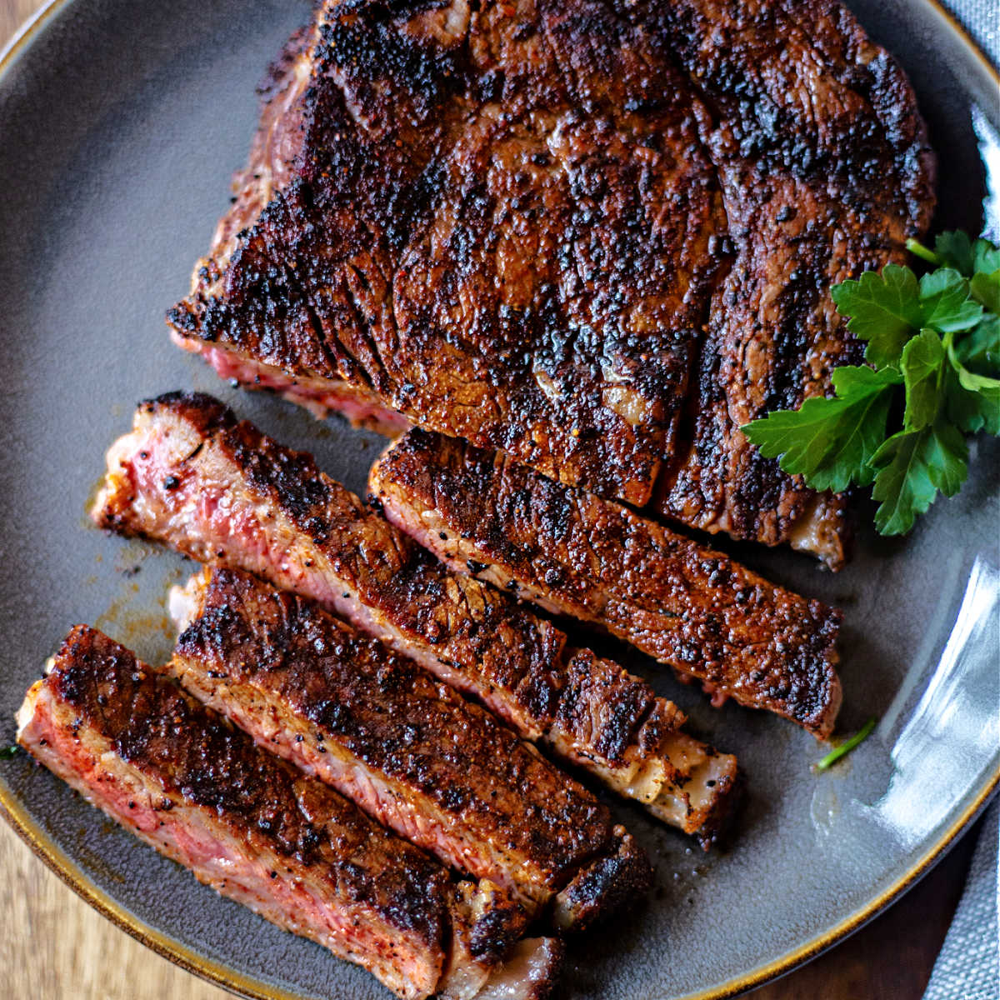

Coffee Rub Steak Recipe

This is a recipe to make coffee rub steak. A classic steak with a twist done right. You'll impress any guests with these simple ingredients.
The ingredients that will be needed is listed down below
Ingredients
- Steak of your choice
- 1 Tablespoon of ground coffee
- 1 Tablespoons of aleppo pepper
- 1 Tablespoons of black pepper
- 2 Tablespoons of avocado oil
- 2 Tablespoons of salt
- 2 Tablespoons of butter
Instructions
- Mix all the seasonings together
- Dry the steak with a paper towel
- Season the steak
- Get the pan hot and put 2 tablespoons of avocado oil
- Cook steak to desired temperature
- Turn heat off and throw butter in
- Baste steak for 1 minute
- Take steak off pan and let it rest for 3-5 minutes
- Serve and enjoy
Go back to main page